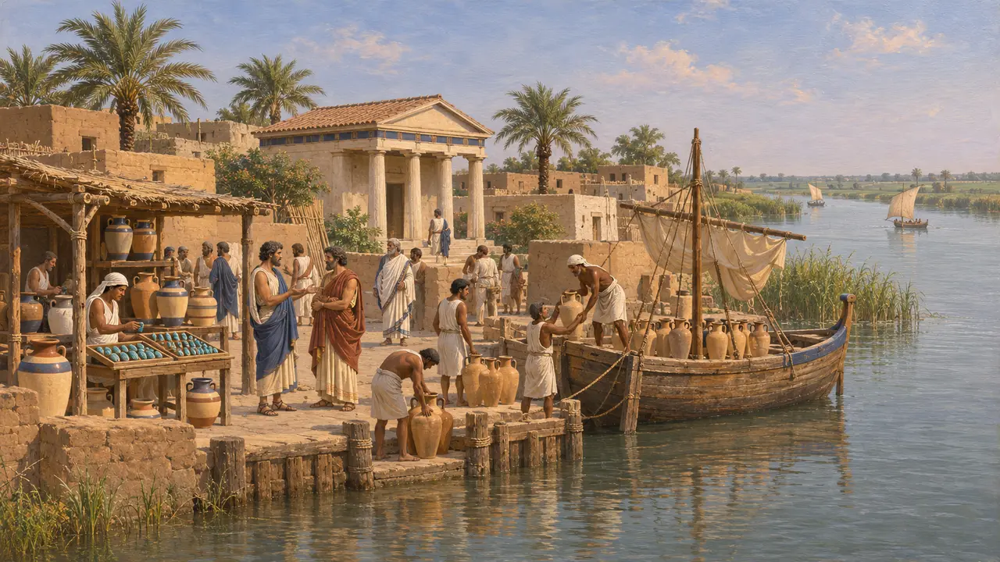
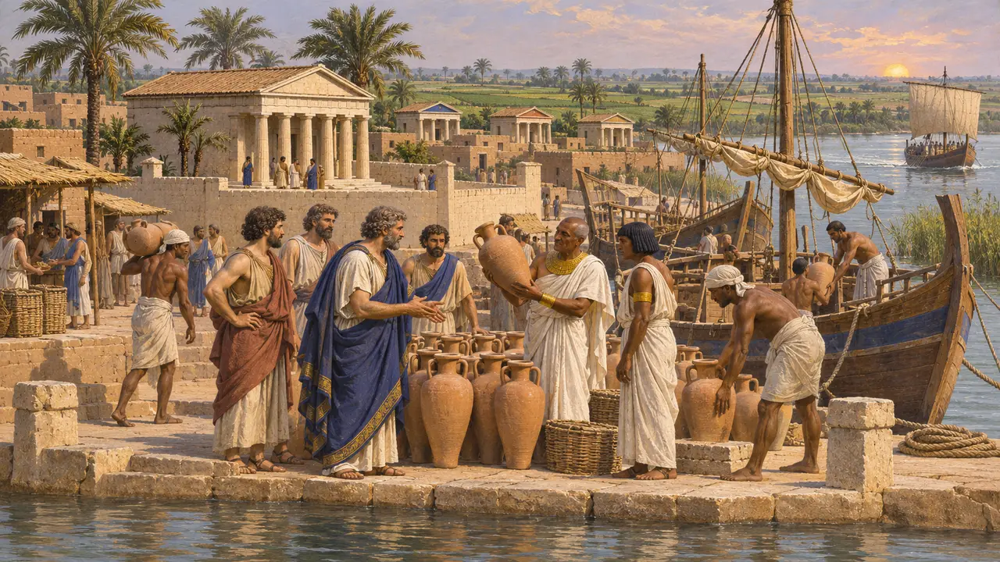
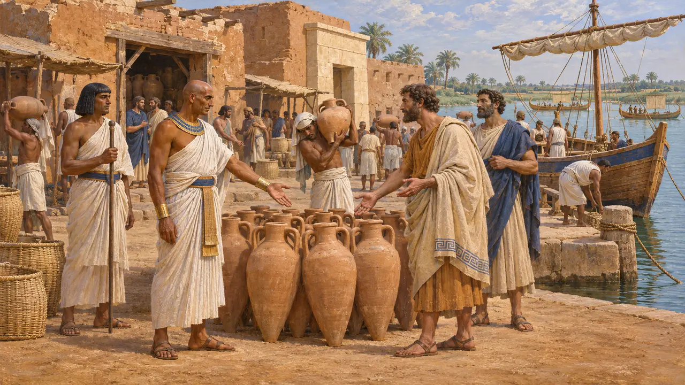
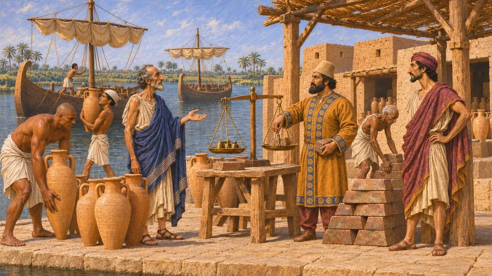
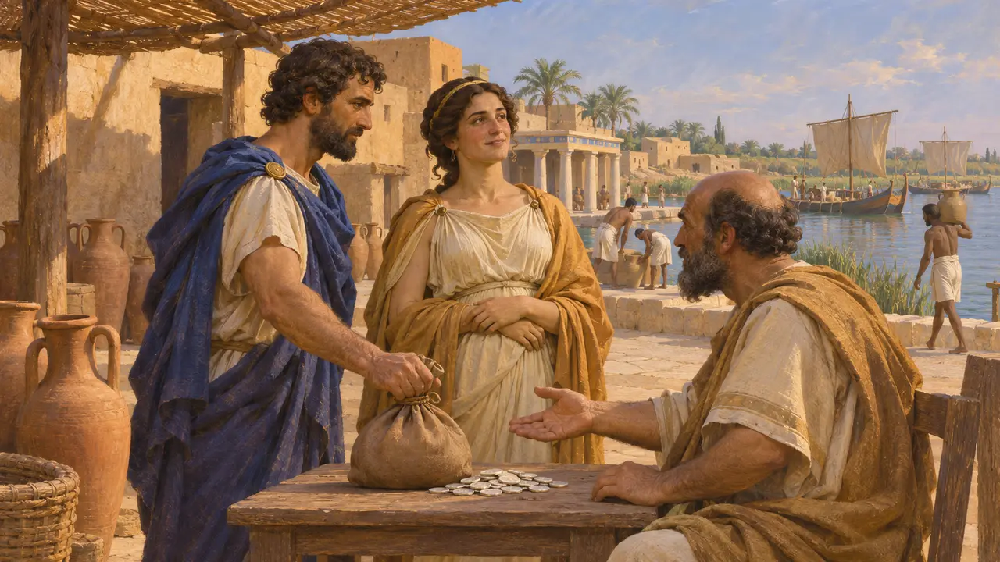

ナウクラティス
エジプト、ナイル川カノポス支流のギリシア交易港。紀元前620年頃から営まれた
ナウクラティスはナイル・デルタ西部の河港で、エジプトの支配下でギリシア商人が居住し、交易し、独自の聖域を建てることを許されていた。ギリシアの品々がエジプトに入る主要な玄関口であり、エーゲ海へ向かうエジプトの穀物や亜麻布などの品々の出口でもあった。紀元前525年にカンビュセスがエジプトを征服すると、ペルシアの支配下に入った。
ゲームでは： 本作においてナウクラティスはメンフィスのステージの交易相手である。史実では、ナウクラティスはずっと下流のデルタ西部、サイスの近くにあり、2つの町の間の物資はナイル川の舟で運ばれていた。

カノポス支流の港
同時代の記録コーム・ギエイフでの発掘によりこの遺跡の所在が特定された。町はナイル川のカノポス支流沿い、王都サイスからほど近い場所にあった。フリンダーズ・ピートリーと後続のイギリスの発掘者たちは、ギリシアの聖域群、東ギリシアをはじめとする輸入陶器の大量の堆積、そして売り物のファイアンス製スカラベや護符を作る工房を発見した。近年の調査では、旧河道に沿った港湾施設の跡も確認されている。
W. M. F. Petrie, Naukratis I, 1886; A. Villing et al., Naukratis: Greeks in Egypt, British Museum, 2013-


創建者と創建時期
係争中ヘロドトスはナウクラティスを紀元前570年頃から統治したアマシスと結びつけるが、ストラボンはそれ以前のプサンメティコスの時代に入植したミレトス人によるものとしている。出土した陶器は、アマシス以前の紀元前7世紀後半からギリシア人がいたことを裏づける。今日の多くの歴史家は、アマシスは既存の交易共同体を創設したのではなく統制したと考えている。ただし町がどう治められていたか、またギリシアだけでなくどの程度エジプトの町でもあったかは、いまも議論が続いている。
Strabo 17.1.18; A. Möller, Naukratis: Trade in Archaic Greece, 2000

ペルシア支配下の交易
係争中紀元前525年にカンビュセスがエジプトを征服した後もナウクラティスは交易を続け、ギリシアからの輸入も途絶えなかった。エレファンティネから出た、後に削り消されたアラム語の関税記録は、クセルクセス治世の紀元前475年頃のもので、エジプトに入る積荷に関税を納めたイオニアとフェニキアの船を列挙しており、その積荷には葡萄酒、油、金属が含まれる。文書は港の名を挙げておらず、それがナウクラティスを示すのか別のデルタの港なのか学者の見解は分かれるが、王の役人たちがこの海上交易にいかに課税したかを伝えている。
A. Yardeni, Maritime Trade and Royal Accountancy in an Erased Customs Account from 475 BCE, 1994; P. Briant, From Cyrus to Alexander, 2002

ロドピスとサッフォーの兄弟
後世の伝説ヘロドトスは、アマシスの時代にナウクラティスで名を馳せたトラキア生まれの遊女ロドピスについて語る。詩人サッポーの兄弟であるミュティレネのカラクソスが大金を払って彼女を自由の身にし、ヘロドトスによればサッポーはそのことで兄弟を詩の中で嘲ったという。ロドピスがギザのピラミッドの一つを建てたと主張するギリシア人もいたが、ヘロドトスはこの話を退けている。この逸話は、この町の歴史よりも、ギリシア人の噂話におけるその名声を映し出している。
Herodotus 2.134-135
出典
- Herodotus 2.178-179
- A. Möller, Naukratis: Trade in Archaic Greece, 2000
- A. Villing et al., Naukratis: Greeks in Egypt, British Museum, 2013-
- W. M. F. Petrie, Naukratis I, 1886
- Strabo 17.1.18
- P. Briant, From Cyrus to Alexander, 2002